Using zec-qt-wallet¶
Getting started¶
Initial Parameters Download
The first time zec-qt-wallet starts it will create a zcash.conf file with default configuration values as well as downloading the parameters required for sending and validating shielded transactions. These parameters are currently around 1.7GB in size and only need to be downloaded once.
Now that you have zec-qt-wallet installed it is time to start using the software.
If you are using the embedded zcashd and it is your first time using the software, the system parameters will be downloaded from the internet (~1.7GB) and a zcash.conf file created specifying some default configuration values. The blockchain will then begin to sync, which is a time-consuming process taking anywhere of the order of 8 hours to days depending on your hardware and network performance. You can monitor the progress in the bottom right corner of zec-qt-wallet which displays the number of blocks downloaded and a sync percentage.
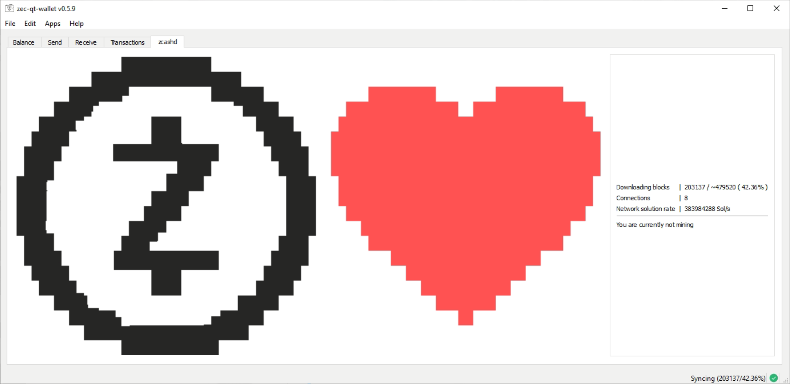
Initial Sync
The blockchain is around 22GB in size and will take around 8+ hours to download. Monitor the progress via the sync progress in the bottom right corner of zec-qt-wallet.
Generating a new address¶
Visiting the Receive tab of zec-qt-wallet will show all current addresses in the wallet and enable you to generate new ones. To learn about the different types of addresses available in Zcash which are transparent, shielded (Sprout and Sapling) please visit this page. It is not possible to remove an address from the wallet once it has been generated.
Backup after generating a new address
Whenever a new address is generated you should ensure that you have a backup of the address. Only Sapling uses a HD wallet and can be recreated from a seed whereas transparent or Sprout addresses either require the private key or a wallet.dat backup made after the address was created. See the Backing up section for more details.
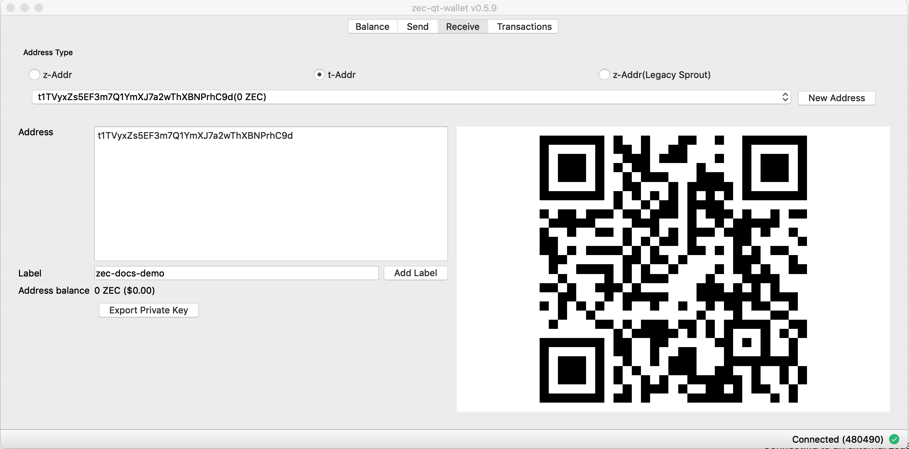
Transparent addresses are automatically created when clicking the t-Addr button as transparent addresses should not be reused. Unlike transparent addresses, it is fine to reuse shielded addresses and so new addresses can be manually created on-demand via the New Address button.
Optionally, add a label to easily identify the address and add it to your address book. A QR code is also provided for the address which may be used to scan into a compatible application to receive funds.
zec-qt-wallet will also show if the address has been previously used.
Sending a transaction¶
Once you’ve generated an address and have sent some funds to it, you can send some ZEC. Click on the Send tab:
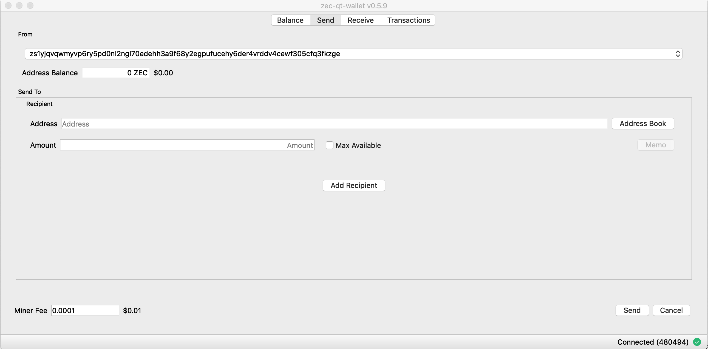
You can only send funds with at least one confirmation. While transactions are being confirmed, they are easily identifiable as they are highlighted in red.
Choose an address with funds in it and enter the recipient address. You may specify multiple recipients per transaction, and there may be a mixture of transparent and shielded recipients. The Memo field is only available when sending to a shielded address (either Sprout or Sapling). The default mining fee is 0.0001 ZEC which is recommended for all transactions. See the Options section if you wish to customise this behaviour and understand the implications.
Shielded send requirements
Sending Sapling transaction require little resource usage and happen in a few seconds. If you still have funds in legacy Sprout addresses sending times are typically around 70-90 seconds and require an additional 1.3GB of memory to perform the spend.
Viewing transaction on explorer¶
Once complete, the txid will be displayed. Right-click to bring up a menu to view on a block explorer. Alternatively, for any transactions on the Transactions tab right click and choose View on block explorer.
This will open up the transaction on a block explorer. If your transaction is a shielded one there will not be any public information available except the fee paid.
Pay Zcash URI¶
You can enter a Zcash URI by visiting File->Pay Zcash URI and pasting in the payment link. Zcash payment URIs encode the address, amount and memo into a single convenient string, so you can enter it into zec-qt-wallet and make payments easily.
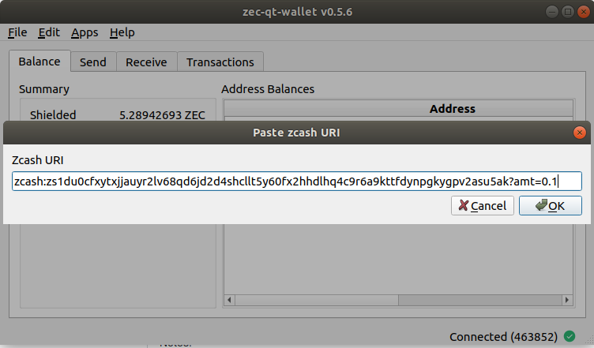
Address book¶
The address book makes managing addresses and labels simple. Either select Address Book in the application menu or select the button on the Send tab.
You can import an address book in csv format and users of WinZEC can import an existing address book.

Backing up¶
zec-qt-wallet provides multiple options to ensure your wallet and keys are backed up. It is important that you perform regular backups if you are not exclusively using Sapling addresses and have the Sapling seed. While Sapling has a HD wallet, support for importing the seed is not yet available.
It is not yet possible to import a Sapling HD seed
While Sapling provides a HD wallet the feature for importing the seed does not yet exist, so while your funds would not be lost in the situation where you have the seed they would be rendered unusable until this feature is added. Therefore it is recommended you keep regular backups of either private keys or the wallet.dat file until this feature is implemented.
Export a single private key¶
To export a single private key on the Balance tab right click on the address and choose Get private key from the context menu. Alternatively, on the Receive tab choose the address in question and click the Export Private Key. The output of both is the private key which you can copy to a secure storage medium or be used to import into other applications.
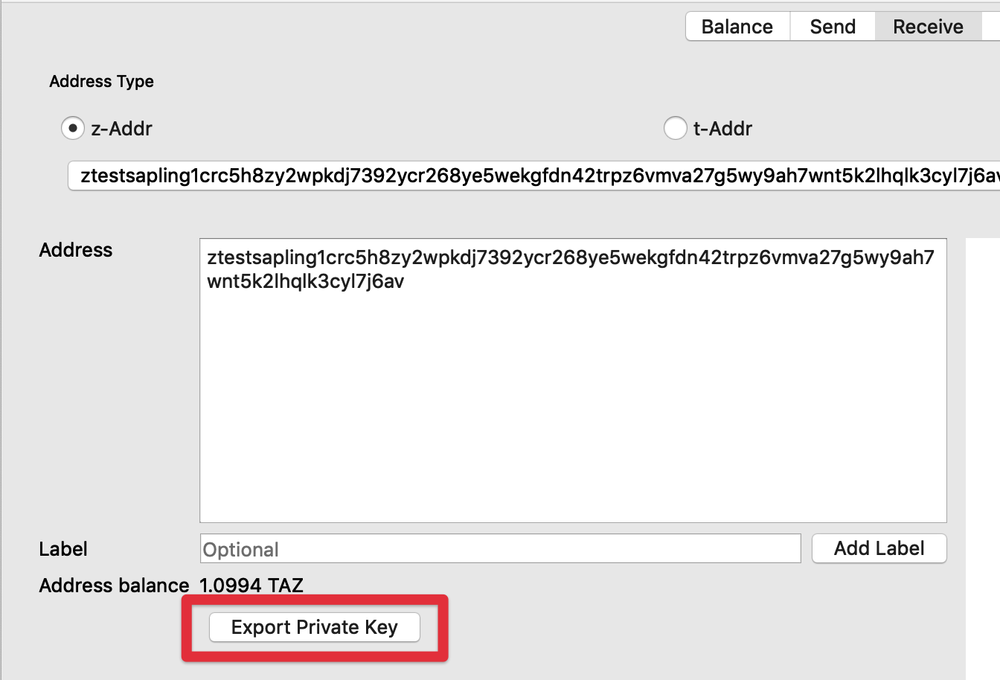
Export all private keys¶
You can export all private keys for addresses in your wallet by choosing the File->Export all private keys menu option. This will provide a list of all private keys in the wallet.
Note that by default when zcashd starts it creates 100 transparent addresses for the keypool for use as change addresses, hence this list will always contain at least 100 transparent address keys, not all of which have been used.
Backing up wallet.dat¶
You can backup all of your private keys by making a copy of the wallet.dat file. To restore, you then replace any existing wallet.dat file in the data directory and start zec-qt-wallet as normal.
Create a new backup after each new address generated
As new addresses are generated you will need to create an updated backup, else the new private keys will not be included.
While this is a convenient method of backing up, it means that you are restricted to importing to software compatible with zcashd and also if you have many addresses that are unused it will slow rescanning of the wallet over importing only your addresses with funds.
Importing private keys¶
To import a private key, choose File->Import private key from the menu. You may paste in multiple keys, one per line that will be imported into the wallet. Note that depending on the number of keys to import and if they are shielded addresses it may take some time for the import to be completed.
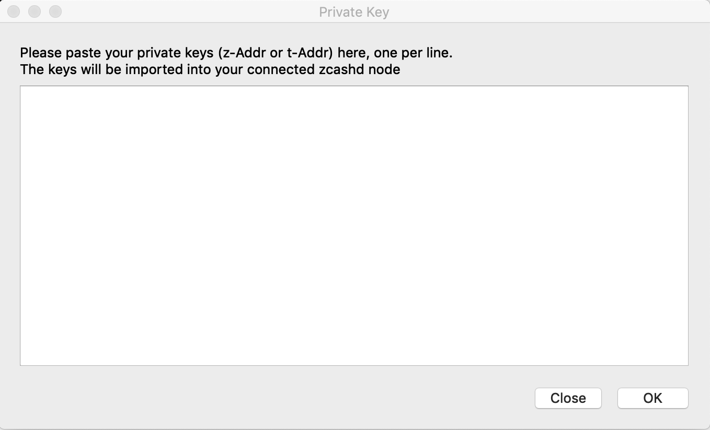
zeq-qt-wallet options¶
zec-qt wallet has a number of options that allow you to customise how the application behaves and may be accessed in the Settings->Options menu as shown below.
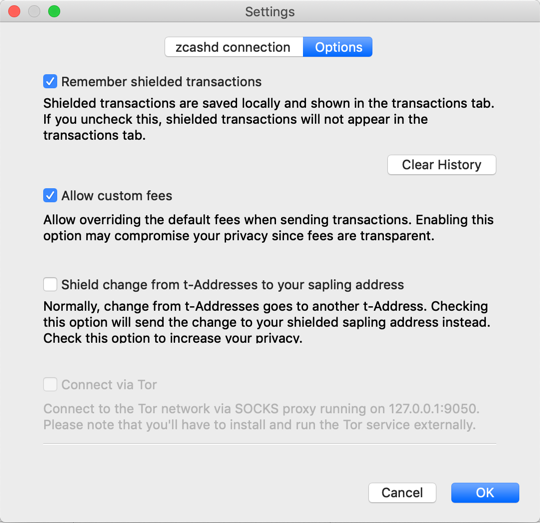
Remember shielded transactions¶
By default zcashd will not store information about your outgoing fully shielded transactions (z->z). If this option is selected, zec-qt-wallet will store outgoing transactions locally so that any shielded spends will appear in the transactions tab. If you do not wish these transactions to be saved by zec-qt-wallet simply toggle the option for Remember shielded transactions. At any point, you may clear your shielded transaction history locally by choosing the Clear History button (there is no way of recovering this data once cleared).
Allow custom fees¶
Choose this option to allow the ability to change the default 0.0001 ZEC transaction fee. As all fees are transparent it is highly recommended that you use the default fee for all transactions to make your transactions indistinguishable.
Shield change to your Sapling address¶
Like Bitcoin, when using transparent addresses, change from a transaction goes to a new transparent address which can lead to your funds being spread over multiple addresses. zec-qt-wallet allows you to set an option to automatically send this change to a Sapling address via the Shield change from t-Addresses to your sapling address option. This was implemented in Bitcoin (and inherited in Zcash transparent addresses) as a privacy measure to prevent trivial linking of transactions on the blockchain so shielded (z) addresses do not have this property and any change is returned to the sending (z) address.
Connect via TOR¶
When using Zcash it does nothing to preserve your network level privacy so a unique IP address can allow network observers to correlate your Zcash transactions with each other and with your other traffic. To overcome this, you may use TOR to obfuscate your IP address.
You will first need to have TOR installed which you may do from the official site. You will need to download and run the TOR Expert Bundle (not TOR browser). TOR is also available on all popular package managers, e.g. macOS brew install tor or Debian apt install tor.
Once running, choose the option in zec-qt-wallet to Connect via TOR and the following line will be added to your zcash.conf file to configure TOR usage proxy=127.0.0.1:9050. Restart zec-qt-wallet to enable the service running over TOR.
Use the advanced options when installing zec-qt-wallet to run zcashd over TOR from the initial startup, so your IP is never exposed to the network.
Parameters are not currently downloaded over TOR
The Zcash parameters that are downloaded on the first launch are not done so over TOR depending on your network configuration.
Onion Nodes¶
You can connect to Zcash nodes only behind onion addresses by adding the following into your zcash.conf file, which will ensure that your IP address is not exposed to any Zcash-related services when running zec-qt-wallet.
proxy=127.0.0.1:9050 onlynet=onion
Then provide a list of onion nodes to connect to. A sample list is provided below but these may change over time.
addnode=zcmaintvsivr7pcn.onion addnode=zcashiqykswlzpsu.onion addnode=zcashqhrmju6zfhn.onion addnode=zcashgmvxwrmjsut.onion addnode=zcashz3uma65ix7b.onion addnode=zcashiyf4kxluf3x.onion addnode=zcashwfe4x3jkz2b.onion addnode=zcashvkeki52iqpc.onion addnode=zcasha3cmfrpy7b7.onion addnode=zcashz7ed3nvbdxm.onion addnode=zcash5adwfpxfuvf.onion addnode=zcashixg5ol2ndo4.onion addnode=zcashuzwa365oh3n.onion addnode=zcashskbeoiwtym3.onion addnode=zcashuyvk5e7qfzy.onion addnode=fhsxfrwpyrtoxeal.onion addnode=zcash2iihed2wdux.onion addnode=w3dxku36wbp3lowx.onion addnode=zcashuhmzycmlwld.onion
Encrypted Memo field¶
The encrypted memo field allows a user to include an optional memo of up to 512 bytes in their transaction. As the transaction is encrypted on the blockchain only the recipient of the transaction can read the memo. This could, for example, be used to include information about the sender for a purchase or a refund address and there is more detail about potential uses of this field in this blog post.
You can only include a memo when sending to a shielded address. To include a memo in a transaction click the Memo button and it will provide a textbox allowing you to enter 512 characters.
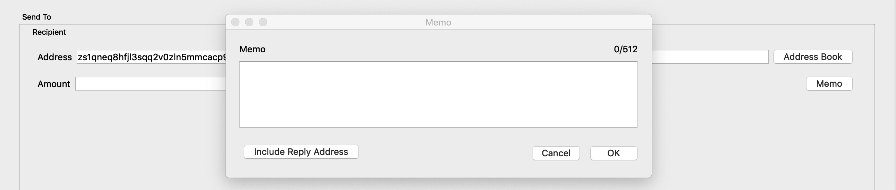
Including a reply-to address¶
If you want to send a reply-to address in the memo field, for example, if you are using the memo field as an encrypted chat application, zec-qt-wallet allows you to include a reply-to address in a standard format. To use, press the Include Reply Address and the sending address will automatically be inserted.
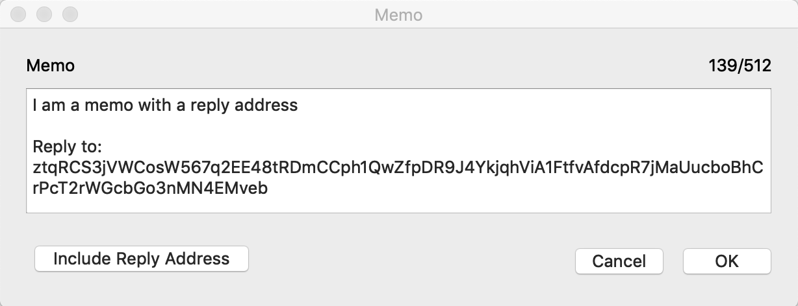
Replying to a memo¶
If you receive a transaction with a memo that contains a reply address, you can reply to it directly from the transactions table. Simply right-click the transaction and choose Reply to xxx.
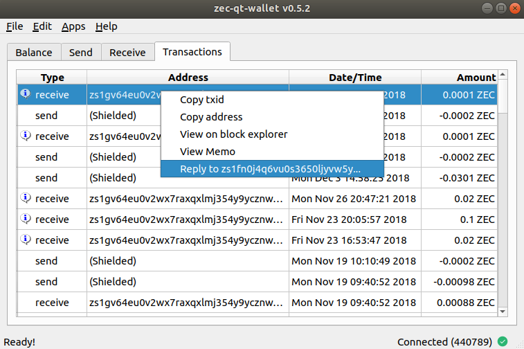
Exporting transactions¶
zec-qt-wallet allows you to export all transactions via the File->Export Transactions menu item. You will be prompted where to store the exported file and it will be saved as a csv file with the following headers:
| Type | Address | Date/Time | Amount | Memo |
|---|---|---|---|---|
| receive | zs123… | Sun Feb 17 13:42:38 2019 | 10 ZEC | I am a secret memo |
Apps¶
zec-qt-wallet bundles some applications to make common tasks simpler.
Using z-board.net¶
z-board.net is a message board based on the encrypted memo field. When using shielded addresses messages are anonymous. zec-qt-wallet integrates with the z-board.net service by allowing you to choose topics and post to the correct address without manually adding it.
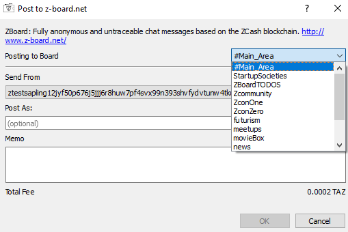
Turnstile migration¶
See the page on the turnstile migration for full details.
Customising zcash.conf¶
The zcash.conf file may be used to customise how the underlying zcashd software behaves. There are many configuration options available. When zec-qt-wallet is installed it creates this file with sensible defaults such as connecting to the mainnet and a random rpcpassword. The location of zcash.conf varies by system. It is located in the following location on each platform:
- Windows:
%HOMEPATH%\AppData\Roaming\Zcash\zcash.conf - macOS:
~/Library/Application Support/Zcash/zcash.conf - Linux:
~/.zcash/zcash.conf
Connecting to an external zcashd¶
If you have an external zcashd running zec-qt-wallet will attempt to connect to it automatically. If this fails you can manually set the required settings via the Edit->Settings menu item and specifying the connection details in the zcashd connection tab.
Note that the easiest way to connect to a remote node is to SSH to it with port forwarding:
ssh -L8232:127.0.0.1:8232 user@remotehost
You can disable the embedded zcashd and force zec-qt-wallet to only connect to an external node by starting zec-qt-wallet with the -no-embedded option.
Exposing RPC port
Using the RPC port over a remote interface is NOT RECOMMENDED, because that will cause the rpcpassword to be transmitted over the network unencrypted, allowing any observer to steal your keys and Zcash and take over the OS account running zcashd.